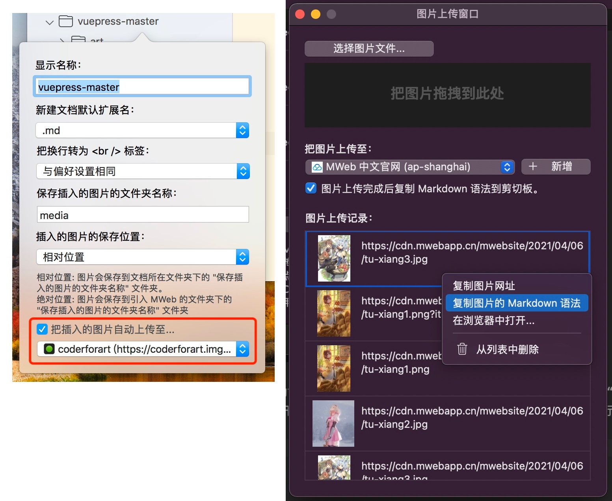

MWeb 4 Q & A
中文版：MWeb 4 相关问题及回答
MWeb 4 Library Mode iCloud synchronization question.
What is the difference between MWeb 3's iCloud synchronization and MWeb 4's?
The synchronization of MWeb 3 is to save the folder of the Library in iCloud Drive, and the system will synchronize the files. The synchronization of MWeb 4 uses a technology called CloudKit for synchronization, which is controlled by MWeb and is no longer stored in iCloud Drive. If you want to use MWeb 4's iCloud synchronization, you need to click the "Store in iCloud" button in the settings.
How to synchronize the Library of MWeb 3 to iCloud?
If it is the macOS version of MWeb, please confirm whether it is stored in the folder of iCloud Drive or related cloud drive. If it is, you need to ensure that the folder the Library is completely synchronized to the local.
Then, in the Preferences - Library, click the Store in iCloud button, and then in the pop-up prompt whether to merge the Library, choose Merge.
This prompt will only be displayed once. If it is too late to choose before, you can switch back to the local document library first, then exit MWeb, and run it on the command line:
defaults write com.coderforart.MWeb3 ckIsChooseMergeLocalToCloudKit -boolean false
Then start MWeb and re-select Store in iCloud, and it will prompt again whether to merge.
If it is the iOS version of MWeb, because the original iOS version of the document library is read-only, you need to use the macOS version of MWeb first, and synchronize the document library to iCloud according to the above method. Then set the document library to store in iCloud on the iOS version.
Can I manually git back up the Library?
Yes, in MWeb 4, Apple’s CloudKit technology is used for synchronization, which will completely synchronize all documents to a private folder in the local MWeb, the location is: ~/Library/Containers/com.coderforart .MWeb3/Data/Library/Application Support/MWebLibrary.
If you want to back up or git backup, you only need to back up this location regularly.
The structure of the document library in this location is the same as the local one. If you don’t want to use iCloud for synchronization, you can copy this folder to other places, then switch back to the local folder storage in MWeb, and then select the folder to copy to. That's it.
What should I do if the desired document version is overwritten during iCloud synchronization?
In the macOS version of MWeb, you can use the menu: File - Revert to... - Browse all versions. For the iOS version, please tap "..." button and choose "Document History...". It is recommended to avoid editing the same document on multiple devices when using it. If you want to edit, please make sure that the document is up to date.
Because the synchronization process is stateless, for example, the current device’s network is not good, network transmission errors, CloudKit errors, etc., will cause the latest version of the current device’s document to be unable to be synchronized to CloudKit in time. At this time, if another device uploads it The new version of the document, and then the current device becomes normal, it will receive an update push from another device, and then the document of the current device will be updated.
MWeb 3.x How to upgrade to MWeb 4.x?
Note: Users of MWeb 3.x can upgrade to MWeb 4.x for free. The upgrade method is: download MWeb 4.x, there will be an "License Upgrade" button in the pop-up interface of the software, click this button You can redeem the 3.x activation code for the 4.x activation code.
Mac App Store users: Please update directly from the Mac App Store.
Tip: MWeb 2.x upgrade to 4.x requires a new payment. If you want to download version 3.x, please click here to download MWeb 3.x. If you want to download the 2.x version, please go to the bottom of the Download MWeb page to download.
After upgrading from MWeb 3, how to find the original preview style? Does MWeb 4 still support custom preview styles?
The original custom style CSS file of MWeb 3 is still in its original place, at the location of ~/Library/Containers/com.coderforart.MWeb3/Data/Documents/themes/PreviewCSS. Then MWeb 4 also supports custom preview styles. The way is to click the Custom Theme button in Preferences - General, choose to add a theme according to the current template, in the window that comes out, uncheck Automatically generate Preview CSS by the Editor Theme., and then paste the content of the CSS file into it.
The custom preview style feature of the iOS version is not available in the current version, but it will be added soon. The original custom CSS file of the iOS version is still kept in your phone. In the next version, you can click "Export MWeb 3 custom preview" at the bottom of the settings page to export your custom CSS style file .
Can't activate after purchasing or redeeming the MWeb 4 activation code?
You can check whether the domain name paddle.com is blocked. Currently, MWeb 4 uses this related service.
Markdown syntax changes
Currently MWeb 4 uses CommonMark standard and GitHub Flavored Markdown (GFM) grammar. For detailed grammar, please refer to:
CommonMark: https://commonmark.org/help/
GitHub Flavored Markdown (GFM): https://guides.github.com/features/mastering-markdown/
There will be some slight changes in the parsing of the grammar. For example, ##If there is no space, it will not be parsed as a title. In addition, the old version of syntax highlighting ==highlighting== is no longer supported. If you really want to use it, you can only use HTML, such as <mark>highlight</mark>.
Changes in image upload service
The method of inserting a local picture and then uploading remains the same. The function of automatically uploading when inserting has changed, and it has been changed to a separate picture upload window. Use the menu: View - Images Upload Window to open this window. The following figure is the change from MWeb 3 to MWeb 4. The left is the MWeb 3 method, and the right is the MWeb 4 method:

other questions?
If you have any questions, please send to coderforart+233@gmail.com this email, I will usually reply you within 1 to 3 working days, thank you very much!